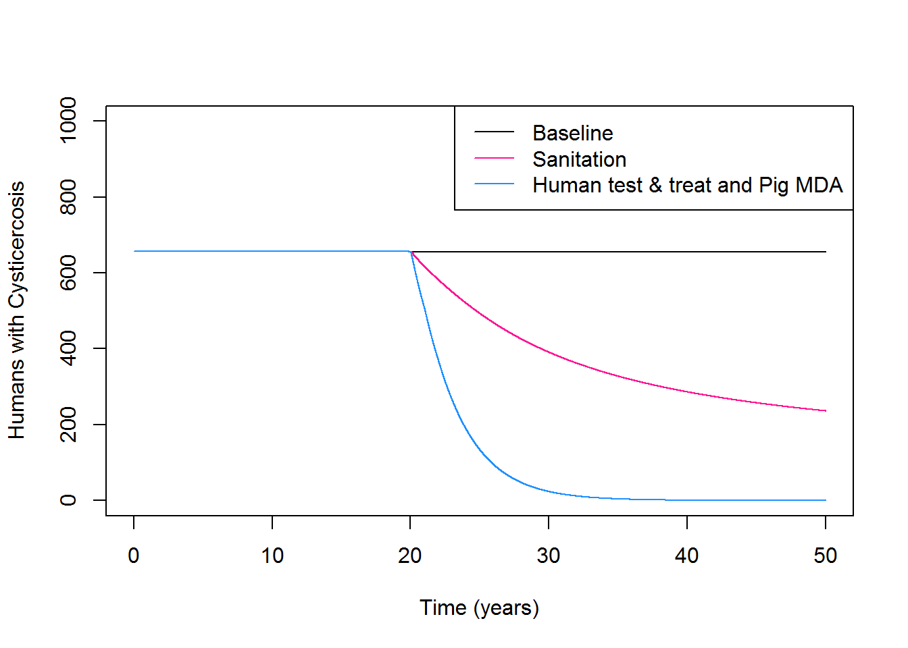

The Set_up() function provides the user a means to specify parameters and starting conditions for a model run. Input parameters, as well as starting prevalence for Taeniasis, and Cysticercosis (in the porcine and human populations) may be left at the default values or specified in the function call.
Changes to default prevalence values will initiate to re-estimation of transmission parameters to allow the system to run at the newly specified endemic equilibrium. The Set_up() function returns a list of two elements: 1) The input parameters for a model run (standardised time units and dependent parameters included) and 2) Initial state variable values.
To initiate and view default parameters:
Initialise<-Set_up()# View parameters
Initialise[[1]][1:5]## $tau
## [1] 2.357443e-10
##
## $PPS
## [1] 2000
##
## $HPS
## [1] 10000
##
## $bH
## [1] 15.4321
##
## $bP
## [1] 166.6667# View state variable starting values
Initialise[[2]][6:7]## $IH0
## [1] 186
##
## $IPL0
## [1] 320Input arguments for Set_up() are documented in the help file ?Set_up(). Certain combinations of input prevalence may not be possible to fit, in which case an error message will be thrown.
The Run_model() function provides all functionality for model runs. To run the model at baseline, with default parameters and endemic equilibrium values, only the length of the model run (specified in years) need be specified:
M1<-Run_model(Time=50)| t | SH | IH | SHC | IHC | E | SP | IPL | IPH | RP | VP |
|---|---|---|---|---|---|---|---|---|---|---|
| 0 | 9114 | 186 | 686 | 14 | 88372603 | 1600 | 320 | 80 | 0 | 0 |
| 0 | 9114 | 186 | 686 | 14 | 88372603 | 1600 | 320 | 80 | 0 | 0 |
| 0 | 9114 | 186 | 686 | 14 | 88372602 | 1600 | 320 | 80 | 0 | 0 |
| 0 | 9114 | 186 | 686 | 14 | 88372601 | 1600 | 320 | 80 | 0 | 0 |
| 0 | 9114 | 186 | 686 | 14 | 88372598 | 1600 | 320 | 80 | 0 | 0 |
| t | CCC | CTC | |
|---|---|---|---|
| 100 | 3 | 68 | 30 |
| 101 | 3 | 68 | 30 |
| 102 | 3 | 69 | 30 |
| 103 | 3 | 70 | 31 |
| 104 | 3 | 70 | 31 |
| 105 | 3 | 71 | 31 |
| 106 | 4 | 72 | 32 |
| 107 | 4 | 73 | 32 |
| 108 | 4 | 73 | 32 |
| 109 | 4 | 74 | 33 |
| 110 | 4 | 75 | 33 |
| t | Humans_Taeniasis | Humans_Cysticercosis | Pigs_Cysticercosis | |
|---|---|---|---|---|
| 17992 | 600 | 187 | 657 | 379 |
| 17993 | 600 | 187 | 657 | 379 |
| 17994 | 600 | 187 | 657 | 379 |
| 17995 | 600 | 187 | 657 | 379 |
| 17996 | 600 | 187 | 657 | 379 |
| 17997 | 600 | 187 | 657 | 379 |
| 17998 | 600 | 187 | 657 | 379 |
| 17999 | 600 | 187 | 657 | 379 |
| 18000 | 600 | 187 | 657 | 379 |
| 18001 | 600 | 187 | 657 | 379 |
| t | Human_Taeniasis_prev | Human_Cysticercosis_prev | Pig_Cysticercosis_prev | |
|---|---|---|---|---|
| 17992 | 599.70 | 0.02 | 0.07 | 0.19 |
| 17993 | 599.73 | 0.02 | 0.07 | 0.19 |
| 17994 | 599.77 | 0.02 | 0.07 | 0.19 |
| 17995 | 599.80 | 0.02 | 0.07 | 0.19 |
| 17996 | 599.83 | 0.02 | 0.07 | 0.19 |
| 17997 | 599.87 | 0.02 | 0.07 | 0.19 |
| 17998 | 599.90 | 0.02 | 0.07 | 0.19 |
| 17999 | 599.93 | 0.02 | 0.07 | 0.19 |
| 18000 | 599.97 | 0.02 | 0.07 | 0.19 |
| 18001 | 600.00 | 0.02 | 0.07 | 0.19 |
It is suggested that a period of burn in (specified in years) is included to ensure small changes in endemic equilibrium at the start of a run are avoided:
M2<-Run_model(Time=50, Burn_in=25)Model output starts after this burn in period.
The model can be run with different starting parameters or endemic prevalences. For example to run the model with an prevalence of Taeniasis of 4%:
# Set up the model, specifying the new Taeniasis prevalence
S1<-Set_up(TPREV=0.04)
# Run the model, with new input parameters and initial conditions
M3<-Run_model(Time=50, Burn_in=25, Params=S1[[1]], Initial_states=S1[[2]])Model runs return a data.frame of model output for each time step.
The intervention effect sizes can be viewed using the Intervention_effect_size() function. Effect sizes can be modified if required:
# Initialise default intervention effect sizes
E1<-Intervention_effect_size()
# Double the effect size of Husbandry
E1$$Husbandry<-0.6
The model can be run with a number of interventions. These include:
Running the model, with default intervention effect sizes, requires the intervention and implementation time (year) to be specified:
I1<-Run_model(Time=50, Burn_in=50, Intervention='Sanitation', Intervention_time=25)Multiple interventions may be implemented by provision of a vector:
I2<-Run_model(Time=50, Burn_in=25,
Intervention=c('Sanitation', 'Human_test_and_treat', 'Pig_vaccine'),
Intervention_time=25)Intervention options are detailed in the function help ?Run_model. At present all interventions are implemented at the same time.
The model output data.frame facilitates visualisation using general base R or other plotting methods (eg ggplot2).
# Run the baseline model:
M1<-Run_model(Time=50, Burn_in=50)
# Run the model with a single intervention:
M2<-Run_model(Time=50, Intervention='Sanitation', Intervention_time=20, Burn_in=50)
# Run the model with multiple interventions:
M3<-Run_model(Time=50, Intervention=c('Human_test_and_treat', 'Pig_MDA'),
Intervention_time=20, Burn_in=50)# Plot the output in base R
plot(M1$t/12, M1$Humans_Cysticercosis, t='l', ylim=c(0,1000), ylab='Humans with Cysticercosis', xlab='Time (years)')
lines(M2$t/12, M2$Humans_Cysticercosis, col='deeppink')
lines(M3$t/12, M3$Humans_Cysticercosis, col='dodgerblue')
legend('topright', c('Baseline','Sanitation','Human test & treat and Pig MDA'), lty=c(1,1,1),
col=c('black','deeppink', 'dodgerblue'))
The next-generation matrix estimate of the basic reproduction number (R0) for a given parameters set can be estimated:
R0(Params=Set_up()[[1]])